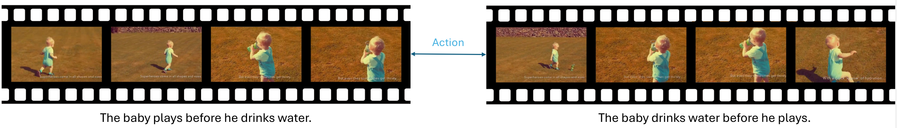

Inspiration
GPT-4o, one of the state-of-the-art Large Multimodal Models (LMMs), is unable to answer a simple question with regards to the order two events happened. It not only did not mention any temporality in its response, its analyses for both videos are completely wrong.
Above: an example instance from Winoground.
Above: an example instance from Vinoground.
Our work is inspired by Winoground, a challenging counterfactual benchmark
for visio-linguistic compositional reasoning in images.
In Winoground, a model must correctly match two images with their corresponding captions,
where both captions use the same set of words, but are rearranged to describe each image.
Our benchmark's name changes the `W' to a `V' for ``video",
and further employs temporal counterfactuals to emphasize this unique element in video data.
Data Curation

We use GPT-4 to generate counterfactual caption pair candidates, then find the corresponding videos using VATEX's captions as the index with the help of a sentence transformer and the FAISS library. If no such video can be found, we search YouTube with the caption in hopes of finding the corresponding video.
Overview
We provide an overview of the seven categories Vinoground encompasses in the flashcards below.
Metrics
We use text score, video score, and group score as our metrics to evaluate a model's textual, visual and temporal understanding capabilities in a balanced manner.
 Performance
Performance
Overall Results

Ablation Study: Frames Sampled
It can be seen that using more frames increases LMM performance on our benchmark. This shows that temporality is indeed needed to perform well for Vinoground, and that we are not suffering from "single-frame bias".
Too many frames, however, does signficantly harm performance, indicating how modern LMMs lack the ability to ignore useless visual signals from the inputs.
On the other hand, humans perform better when the entire video with audio is given when compared to most model's 32-frame sampling method. This indicates that finding ways for models to process more frames at once is an important research direction for temporal reasoning.
Ablation Study: Performance by Category
Interestingly, many models perform significantly better on the "viewpoint" and "contextual" categories that involve drastic frame changes, while being significantly worse on other categories. This shows how models are much better at analyzing coarse-level information rather than fine-grained details.
BibTeX
@article{zhang2024vinoground,
title={Vinoground: Scrutinizing LMMs over Dense Temporal Reasoning with Short Videos},
author={Zhang, Jianrui and Mu, Cai and Lee, Yong Jae}
journal={arXiv},
year={2024},
eprint={2410.02763},
archivePrefix={arXiv},
primaryClass={cs.CV},
url={https://arxiv.org/abs/2410.02763},
}
Acknowledgement
This website is adapted from Nerfies, licensed under a Creative Commons Attribution-ShareAlike 4.0 International License. We thank the LLaMA team for giving us access to their models, and open-source projects, including Alpaca and Vicuna.
Usage and License Notices: The data, code and checkpoint is intended and licensed for research use only. They are also restricted to uses that follow the license agreement of CLIP, LLaMA, and GPT-4. The dataset is CC BY NC 4.0 (allowing only non-commercial use) and models trained using the dataset should not be used outside of research purposes.